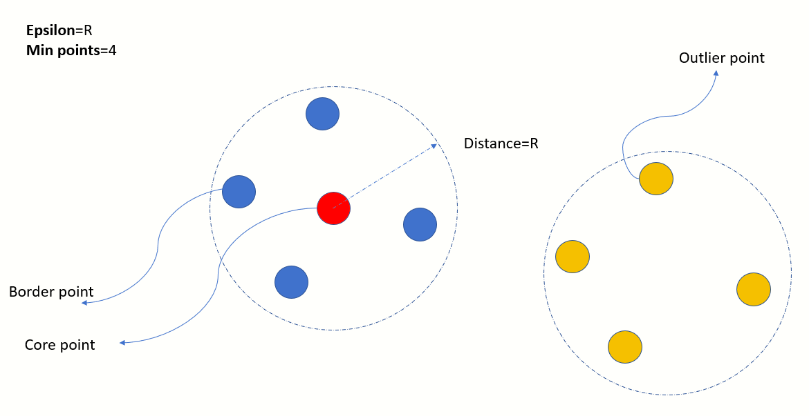
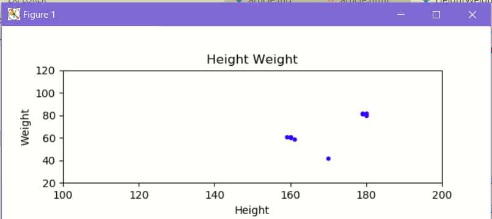
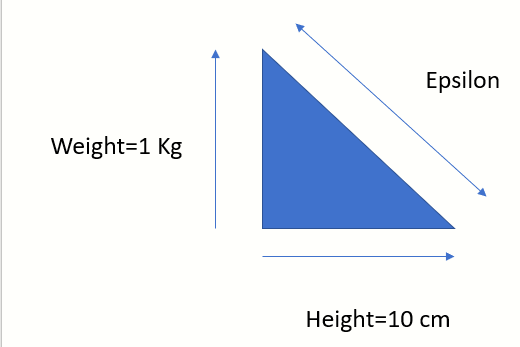
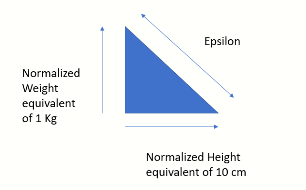

Introduction
In this article I would like to discuss some nuances about the `DBSCAN` clustering algorithm. This is by no means a detailed explanation of the algorithm. The intent of this article is to demonstrate how to calculate the value of `epsilon` parameter when the various dimensions of the features follow different measurement systems. E.g., Age on X axis and Height on Y axis.
An overview of the DBSCAN algorithm
A neighbourhood of a point is defined as the circular region with that point as the centre and a radius of Epsilon. Every point in the dataset is classified into one of the following:
- Core point - If there are MinPoints in the neighbourhood
- Border point - If this point lies in the neighbourhood of a core point and itself has less than MinPoints in its own neighbourhood
- Outlier point - Has less than MinPoints in its own neighbourhood and no other core point in its own neighbourhood
In-depth understanding of DBSCAN
For a full understanding of the DBSCAN algorithm I recommend this video from CourseraVery simple code snippet to demonstrate DBSCAN
In the following snippet we demonstrate a very simple usage of the Scikit's DBSCAN algorithm implementation.
The input to the algorithm is an array of vectors (2d points in this case) and the output is a 1-dimensional array of integers which denote the cluster label for each and very input vector.
E.g. [0, 0, 1, 1, -1, 0, 0, 2, 2, 2, 0, -1, 0] implies there are 3 clusters identified with the labels 0, 1, 2 and 2 outliers denoted by -1.

Sample python code using Scikit learn
import matplotlib.pyplot as plt
from sklearn.cluster import DBSCAN
def create_data():
src_points=[[10,10],[20,20],[30,30]]
src_points.append([9.0,9.0])
src_points.append([9.5,9.0])
src_points.append([9.0,9.5])
src_points.append([9.1,9.8])
src_points.append([20.0,20.0])
src_points.append([20.1,20.9])
src_points.append([20.5,20.5])
src_points.append([20.2,20.8])
src_points.append([30.0,30.0])
src_points.append([30.5,30.0])
src_points.append([30.0,30.5])
src_points.append([30.2,30.8])
src_points.append([30.8,30.2])
#add some outliers
src_points.append([1,1])
src_points.append([40,40])
return src_points
def find_dbscan_clusters(data):
data_points=data
epsilon=1
min_samples=2
db=DBSCAN(eps=epsilon, min_samples=min_samples)
db.fit(data_points)
return db.labels_
def display_clusters(data,cluster_and_noise_labels:[]):
cluster_labels= set(filter(lambda l: l!=-1, cluster_and_noise_labels))
count_of_outliers=len(list(filter(lambda l: l==-1, cluster_and_noise_labels)))
print("Total clusters produced:%d" % (len(cluster_labels)))
print("Total outliers produced:%d" % (count_of_outliers))
data_points=data
#Plot the original data points
x=list(map(lambda p: p[0],data_points))
y=list(map(lambda p: p[1],data_points))
fig, axs = plt.subplots(2)
plt.subplots_adjust(hspace=0.5)
fig.suptitle('Demo of DBSCAN')
axs[0].scatter(x, y,s=5,c='orange')
axs[0].set_title("Original points")
#Plot the clusters and outliers
axs[1].set_title("Clusters ")
colors=["red","orange", "blue"]
tuples_of_data_points_class_labels=list(zip(x,y,cluster_and_noise_labels))
unique_labels=set(cluster_and_noise_labels)
for label in unique_labels:
noisy_points=list(filter(lambda t: t[2] == label,tuples_of_data_points_class_labels))
point_x = list(map(lambda p:p[0],noisy_points))
point_y = list(map(lambda p:p[1],noisy_points))
if (label == -1):
axs[1].scatter(point_x, point_y, marker='x', label="Outlier")
else:
legend_label="Cluster %d" % (label)
axs[1].scatter(point_x, point_y, marker='o', label=legend_label, c=colors[label])
axs[1].legend(loc="upper left")
plt.show()
toy_data=create_data()
cluster_and_noise_labels=find_dbscan_clusters(toy_data)
display_clusters(toy_data,cluster_and_noise_labels)
What happens when the dimensions of a feature have different units of measurements?
Consider the clustering scenario on a toy dataset where the dimensions are Height and Weight of students. I have used the Height-Weight chart from NHS United Kingdom as a reference.
As seen from the above plot, in this toy dataset the points are scattered into 2 distinct clusters
Challenge - How to determine epsilon when with 2 different units of measurements on X and Y axis?

The parameter Epsilon can be imagined as the permitted variation while defining a cluster boundary.
In this example we could use a permitted variation of 1 Kg along the Weight axis and 10 cm along the Height axis.
But, before we compute Epsilon, we will need to re-scale both the axis to the same measurement system.
Let us attempt to normalize the data using the MinMaxScaler class
Accompanying Python code
import matplotlib.pyplot as plt
from sklearn.cluster import DBSCAN
from sklearn.preprocessing import MinMaxScaler
import math
def create_height_weight_data():
src_points=[]
src_points.append([160.0,60.0])
src_points.append([160.0,61.0])
src_points.append([161.0,59.0])
src_points.append([159.0,61.0])
src_points.append([180.0,80.0])
src_points.append([179.0,81.0])
src_points.append([179.0,82.0])
src_points.append([180.0,82.0])
#add some outliers
src_points.append([170.0,42.0])
return src_points
def find_dbscan_clusters(data_points):
scaler = MinMaxScaler()
scaler.fit(data_points)
max_weight_variation=1 #1 Kg
max_height_variation=10 #10 cm
normalized_zero_zero=scaler.transform([[0,0]])
normalized_thresholds=scaler.transform([[max_height_variation,max_weight_variation]])
normalized_height_epsilon=normalized_thresholds[0][0]-normalized_zero_zero[0][0]
normalized_weight_epsilon=normalized_thresholds[0][1]-normalized_zero_zero[0][1]
epsilon=math.sqrt(normalized_height_epsilon**2 + normalized_weight_epsilon**2)
min_samples=2
normalized_data_points=scaler.transform(data_points)
db=DBSCAN(eps=epsilon, min_samples=min_samples)
db.fit(normalized_data_points)
return db.labels_,normalized_data_points
def display(data_points:[],normalized_ht_wt_data:[],cluster_and_noise_labels:[]):
#Plot the original data points
x_axis_limits=[100,200]
y_axis_limits=[20,120]
x=list(map(lambda p: p[0],data_points))
y=list(map(lambda p: p[1],data_points))
fig, axs = plt.subplots(2)
plt.subplots_adjust(hspace=0.5)
#fig.suptitle('Demo of DBSCAN')
axs[0].scatter(x, y,s=10,c='blue')
axs[0].set_title("Height Weight")
axs[0].set_xlim(x_axis_limits)
axs[0].set_ylim(y_axis_limits)
axs[0].set_xlabel("Height")
axs[0].set_ylabel("Weight")
#Plot the clusters
axs[1].set_title("Clusters ")
colors=["red","orange", "blue"]
tuples_of_data_points_class_labels=list(zip(x,y,cluster_and_noise_labels))
unique_labels=set(cluster_and_noise_labels)
for label in unique_labels:
noisy_points=list(filter(lambda t: t[2] == label,tuples_of_data_points_class_labels))
point_x = list(map(lambda p:p[0],noisy_points))
point_y = list(map(lambda p:p[1],noisy_points))
if (label == -1):
axs[1].scatter(point_x, point_y, marker='x', label="Outlier")
else:
legend_label="Cluster %d" % (label)
axs[1].scatter(point_x, point_y, marker='o', label=legend_label, c=colors[label])
axs[1].legend(loc="upper left")
axs[1].set_xlim(x_axis_limits)
axs[1].set_ylim(y_axis_limits)
axs[1].set_xlabel("Height")
axs[1].set_ylabel("Weight")
plt.show()
pass
ht_wt_data=create_height_weight_data()
cluster_and_noise_labels, normalized_ht_wt_data=find_dbscan_clusters(ht_wt_data)
display(ht_wt_data,normalized_ht_wt_data,cluster_and_noise_labels)
Conclusion and feedback
DBSCAN is a robust algorithm whose outcome depends heavily on the parameters Epsilon and MinPoints. The choice of Epsilon is influenced by the domain. E.g., Creating clusters from the coordinates of stars in the Milky Way and finding clusters of bacterial growth on a Microscope slide would need different values of Epsilon. If the data is naturally spatial, e.g., Latitude, Longitude then determining Epsilon is not so complex. However, when the dimensions have different units of measurements then normalization provides a way forward.
I look forward to hearing your feedback. How would you deal with such a problem?